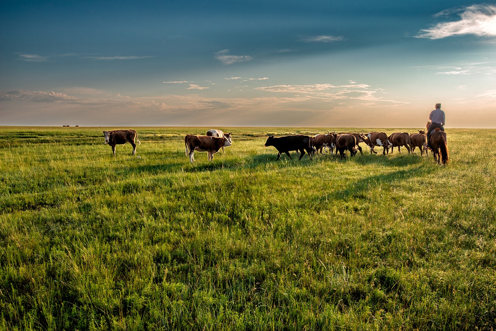

Quesos Artesanales
lo mejor del queso artesanal
Hacer pedidoNuestras Instalaciones
Nuestra locación es en el campo, libre de contaminación
Nuestro ganado esta libre y come pasto libre de quimicos
Las crias son separadas despues de pasar el tiempo adecuado con sus madres, nunca antes